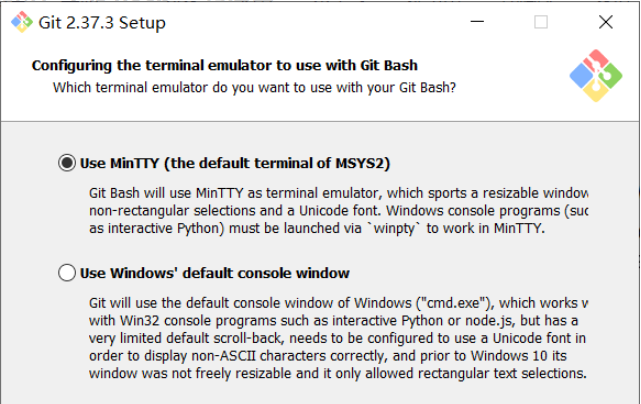

使用静态部署的方式使用 Hexo，我们经常会遇到一个很烦人的问题，就是部署麻烦。
每次写一篇文章，就要经历 Hexo clean、Hexo g、Hexo s、Hexo d 四连，一开始还好，写多了之后烦不胜烦。
同时，由于我个人使用 Joplin 进行文章撰写，这个软件虽然简洁，但并不好用；图片虽然可以直接复制，但不能修改输出目录，图片资源默认保存在与 /blog/ 平行的 /_resources/ 文件夹中。
因此，结合我最为擅长的 batch 脚本语言，我就萌生了使用批处理来优化整个流程的想法。
# 1. Git 安装配置（不确定是否有必要）
在安装 Git 的过程中，我们会有一个配置终端的过程，此处其实是建议选择第一项（使用 MinTTY），但我当时选择了第二项即使用系统的 cmd 来作 git bash 的终端。

如果选择了第一项，可能也是能正常使用批处理来代替执行的，应该不用担心。
# 2. 站点配置
blog 根目录下的_config.yml 文件：
......
post_asset_folder: false
relative_link: false
......使用 Joplin 写文章的话应该关闭这两项（至少我测试下来这样是没问题的）
# 3. 脚本编写
在 blog 根目录下新建 “程序名.bat”，开始编写功能。
先放源码：
@echo off
setlocal EnableDelayedExpansion
goto start
:ac
rem 请设置%targetlable%变量，以确保正常跳转至目标位置
cls
color 0F
goto %targetlabel%
:start
if "%targetlabel%"=="" (set "targetlabel=start"&&goto ac)
echo ------------------------------------------------
echo 1.执行完整的检查和推送blog流程
echo 2.快速上载blog
echo 3.本地预览
echo 4.单独执行指令
echo ------------------------------------------------
echo.
choice /c 1234
if "%errorlevel%"=="4" goto new
if "%errorlevel%"=="3" (set "targetlabel=local"&&goto ac)
if "%errorlevel%"=="2" (set "targetlabel=fast"&&goto ac)
if "%errorlevel%"=="1" (set "targetlabel=full"&&goto ac)
pause&exit
:new
echo 正在创建新的cmd实例...
echo ------------------------------------------------
echo 命令提示：
echo hexo clean
echo hexo g
echo hexo s
echo hexo d
echo ------------------------------------------------
start cmd
echo 按任意键返回菜单...
pause >nul
set "targetlabel=start"&&goto ac
:local
echo ------------------------------------------------
echo 本地预览模式
echo ------------------------------------------------
echo 启动预览...
cmd /c "hexo clean & hexo g & xcopy D:\blog\source\_posts\_resources D:\blog\public\blog\_resources\ /e /s /y & echo 2>D:\blog\.deploy_git\.nojekyll & start http://localhost:4000/ & hexo s"
echo 按任意键返回菜单...
pause >nul
set "targetlabel=start"&&goto ac
:fast
echo ------------------------------------------------
echo 快速上载blog
echo ------------------------------------------------
cmd /c "hexo clean & hexo g & xcopy D:\blog\source\_posts\_resources D:\blog\public\blog\_resources\ /e /s /y & echo 2>D:\blog\.deploy_git\.nojekyll & hexo d"
echo ------------------------------------------------
echo 完成，2秒后退出...
ping localhost -n 3 >nul
exit
:full
echo ------------------------------------------------
echo 完整流程向导
echo 按0为确定，按1为跳过
echo ------------------------------------------------
goto clean
:clean
echo 第一步：清理缓存
choice /c 01
if "%errorlevel%"=="2" goto generate
cmd /c "hexo clean"
goto generate
:generate
echo ------------------------------------------------
echo 第二步：生成页面
choice /c 01
if "%errorlevel%"=="2" goto check
cmd /c "xcopy D:\blog\source\_posts\_resources D:\blog\public\blog\_resources\ /e /s /y & echo 2>D:\blog\.deploy_git\.nojekyll & hexo g"
goto check
:check
echo ------------------------------------------------
echo 第三步：本地预览
choice /c 01
if "%errorlevel%"=="2" goto deploy
start http://localhost:4000/
cmd /c "hexo s"
goto deploy
:deploy
echo ------------------------------------------------
echo 第四步：上传到远程服务器
choice /c 01
if "%errorlevel%"=="2" goto done
cmd /c "hexo d"
goto done
:done
echo ------------------------------------------------
echo 流程已完成，按任意键返回菜单...
pause >nul
set "targetlabel=start"&&goto ac我自认为自己的批处理写得都算比较清晰的了，虽然注释很少，但结合文字应该能看懂每一步是在干什么。
如果要使用，请把里面所有的 D:\blog\source\_posts\_resources 替换为你 Joplin 每次导出时的资源目录，把所有的 D:\blog\public\blog\_resources\ 替换为你的博客站点目录，注意不要动 \public\... 后面的内容。
如果要更换功能模块，也应按照这里的写法，使用 cmd /c 命令内容 & 第二条命令 & 后面的很多命令 来执行，除了 start 用于启动网页之外尽量不要直接在批处理中使用模块的命令，否则容易直接闪退。
创建 .nojekyll 文件的目的是防止 GitHub 忽略掉下划线开头的文件夹，即 _resources
# 4. 工作流程
现在，我们可以愉快地写文章了。
打开 Joplin，新建笔记（记得都放在同一个笔记本下），笔记的名字是文件名，写上 Front-matter 内容，之后就如同在 word 中一样写稿。
图片直接粘贴即可，需要的话修改 [ ] 里的内容，这是属于 markdown 语法的一部分，不详细说明。
写完的文章直接往 blog\source\_posts 里面一存，然后打开脚本按个 2，等两分钟就部署到 Github Pages 上了。
愉快地工作吧！
补充点内容，修改文章稍微有点麻烦，因为 Joplin 非常笨，它不会识别已有的文件，发现重名了直接加后缀，连带着里面的图片也都加后缀、重新复制到 _resources 里面了；对于我这种硬盘空间够、平时图片不多的人来说倒是无所谓，但部署了之后文章会重复显示好几篇。所以不能直接导出文章，需要手动删除旧的，然后再从 Joplin 中导出即可。